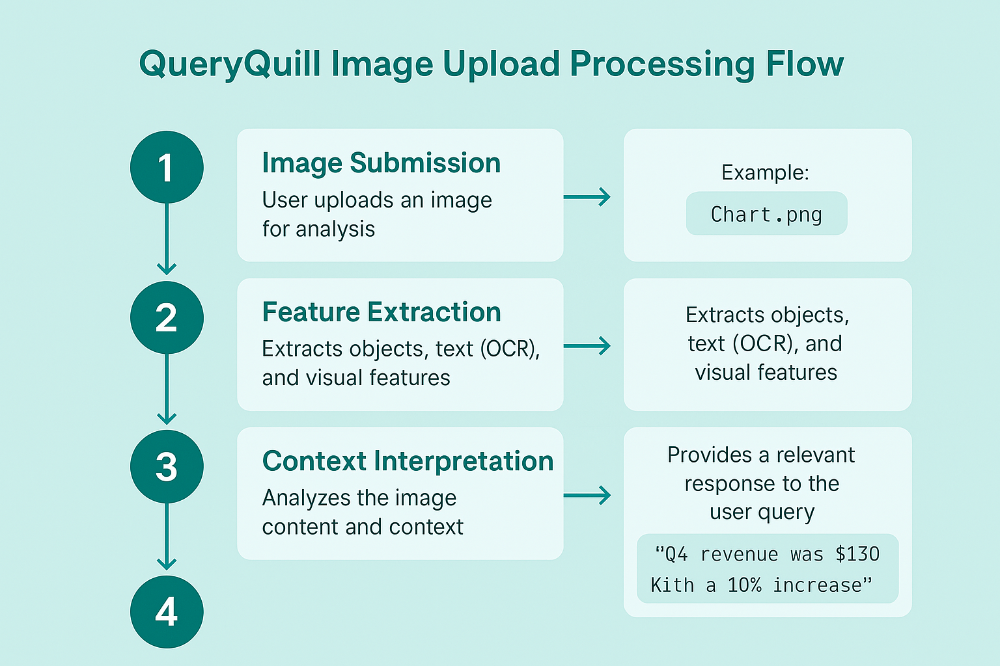
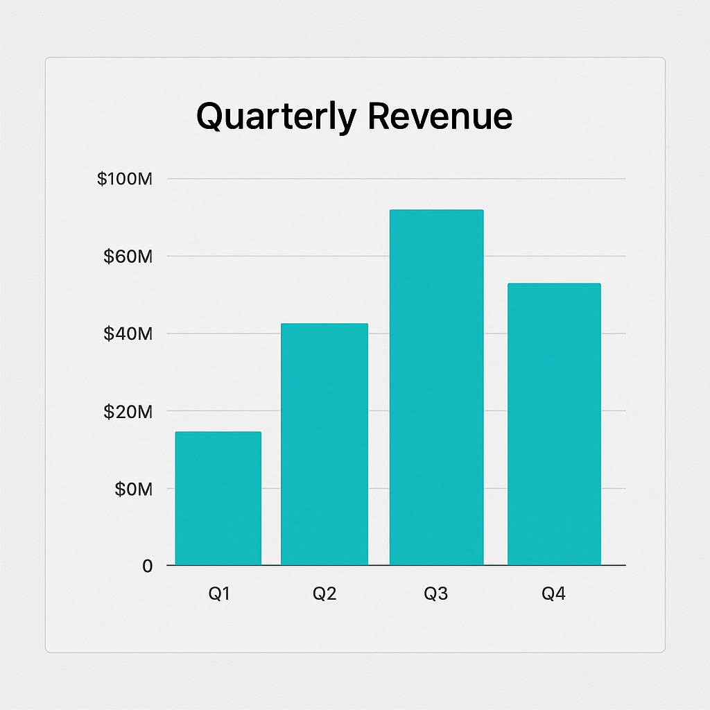

With the introduction of image support in QueryQuill, we're entering a new era of visual AI interaction. This blog breaks down how our system understands images and helps users extract actionable insights.
Image Upload & Preprocessing
Once you upload an image, QueryQuill preprocesses it by resizing, normalizing, and scanning for text (OCR). This ensures the image is optimized for analysis and language models.
Object & Scene Recognition
Our AI uses pre-trained vision models to identify common objects, text, and patterns within the image. Whether it's a photo of a whiteboard, chart, or product, QueryQuill detects what's important.
- Object detection using YOLOv8
- Text detection with Tesseract OCR
- Scene classification using Vision Transformers
Generating Insights
After analyzing the image content, QueryQuill cross-references the visual data with your query to generate a response. This could be a description, chart analysis, or recommended action.
Privacy & Control
We’ve built image processing with privacy in mind. All uploaded content is processed locally (when possible), and temporary cloud data is automatically deleted within 24 hours.
QueryQuill's image understanding feature unlocks huge potential for visual data — from business intelligence to day-to-day convenience.
← Back to all posts